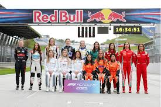

Where the World Meets – 2025 F1 Races

A Kickstart to What Formula 1 Is Today
Formula 1 is no longer just a motor race — it’s a global phenomenon...
Four Days That Move a Nation
Each Formula 1 race isn’t just a Sunday spectacle...
The Impact of Street Circuits
Street circuits are where the beauty and chaos of F1 collide...

Baku on a normal day

Baku during an F1 race weekend
Pollution and Progress
For years, Formula 1 has faced criticism for its environmental toll...
The Netflix Effect – Drive to Survive and the New Movie
Formula 1's global surge in popularity owes a great deal to the Netflix docuseries...
Women in Formula 1 – Breaking the Grid Barrier
While Formula 1 has long been a male-dominated sport...

🏆 Who Will Be the F1 World Champion This Year?
Live Voting Results
- Max Verstappen: 0
- Lewis Hamilton: 0
- Charles Leclerc: 0
- Lando Norris: 0
More Than Just a Race
Formula 1 is far more than fast cars and podium finishes...